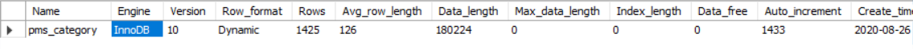
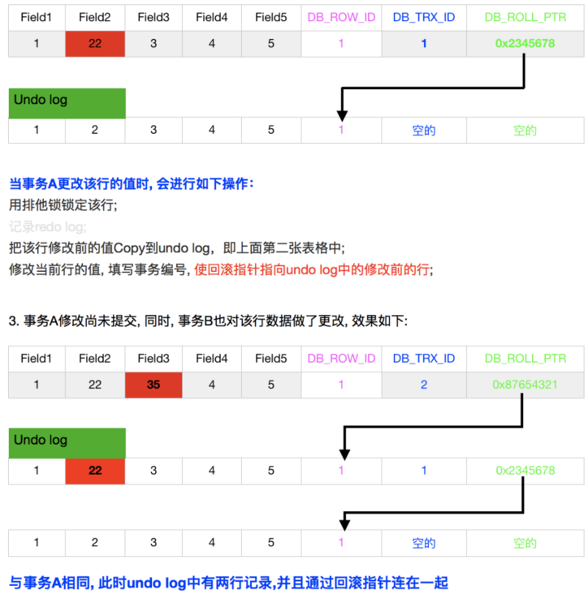

1 存储引擎
1.1 相关指令
查看MySQL所提供的存储引擎
show engines;执行结果：
查看MySQL当前默认的存储引擎
show variables like '%storage_engine%';执行结果：
查看表的存储引擎
show table status like "table_name";执行结果：

1.2 MyISAM存储引擎
在MySQL 5.5之前，MyISAM是默认的存储引擎。MyISAM不支持事务和行级锁，而且有一个毫无疑问的缺陷就是崩溃后无法安全恢复。
特性：
- 全文检索
- 压缩
- 空间函数(GIS)
- 表级锁
存储
MyISAM将表存储在两个文件中：数据文件和索引文件。文件类型 后缀名 数据文件 .MYD索引文件 .MYIMyISAM表包含两种类型的行：动态行和静态行(长度固定)。
表修复
执行表的修复可能导致一些数据的丢失，而且修复操作是非常慢的。CHECK TABLE table_name; # 检查表的错误 REPAIR TABLE table_name; # 修复表 myisamchk； # MySQL服务器已经关闭，通过这个命令进行检查和修复操作压缩表
适合压缩的表：表在创建并导入数据以后，不会再进行修改操作。
压缩表是不能进行修改的（除非先将表接触压缩，修改数据，然后再次压缩）。压缩表可以极大的减少磁盘空间的占用，因此也可以减少磁盘I/O，从而提升查询性能。压缩表也支持索引，但索引也是只读的。
压缩指令：myisampack -b -f xxx.MYI全文索引
MyISAM的全文索引是一类特殊的B-Tree的索引，共有两层。- 第一层是所有的关键字
- 第二层包含的是一组相关的“文档指针”
全文索引不会索引文档对象中的所有词语，它会根据如下规则过滤一些词语：
- 停用词列表中的词都不会被索引。默认的停用词根据通用的英语的使用来设置，可以使用参数ft_stopword_file指定一组外部文件来使用自定义的停用词。
- 对于长度大于ft_min_word_len的词语和长度小于ft_max_word_len的词语，都不会被索引。
适用场景
- 非事务型应用（数据仓库，报表，日志数据）
- 只读类应用
- 空间类应用（空间函数，坐标）
1.3 InnoDB存储引擎
在MySQL 5.5以及以后版本，InnoDB是默认存储引擎。
存储
InnoDB的数据存储在表空间。
表空间- 独立表空间（tablename.ibd）
- 可以通过optimize table 收缩系统文件
- 可以同时向多个文件刷新数据
- 系统表空间（ibdataX）
- 无法简单的收缩文件大小
- 会产生IO瓶颈
表空间相关参数：
innodb_file_per_table。值 含义 ON 使用独立表空间 OFF 使用系统表空间 - 独立表空间（tablename.ibd）
特性
- Innodb是一种事务性存储引擎
- 完全支持事物的ACID特性
- Redo Log和Undo Log
- Innodb支持行级锁（并发程度更高）和表级锁。
适用场景
Innodb适合大多数OLTP应用。
1.4 MyISAM和InnoDB的区别
| 项目 | MyISAM | InnoDB |
|---|---|---|
| 锁级别 | 表级锁(table-level locking) | 行级锁(row-level locking)和表级锁,默认为行级锁 |
| 事务 | MyISAM强调的是性能，每次查询具有原子性，其执行速度比InnoDB类型更快，但是不提供事务支持。 | InnoDB提供事务支持事务，外部键等高级数据库功能。 |
| 外键 | 不支持 | 支持 |
| MVCC | 不支持 | 支持 |
1.5 MVCC(Multiversion concurrency control)
MySQL的大多数事务型存储引擎实现的都不是简单的行级锁。基于提高并发性能的考虑，他们一般都同时实现了多版本并发控制(MVCC)。可以认为MVCC是行级锁的一个变种，但是它在很多情况下避免了加锁操作，因此开销更低。大都实现了非阻塞的读操作，写操作也只锁定必要的行。MVCC的实现有乐观并发控制和悲观并发控制。MVCC的实现，是通过保存数据在某个时间点的快照来实现的。
InnoDB采用MVCC来支持高并发，并且实现了四个标准的隔离级别。默认级别是REPEATABLE READ(可重复读)，并且通过间隙锁（next-key locking）策略防止幻读的出现。间隙锁使得InnoDB不仅仅锁定查询涉及的行，还会对索引中的间隙进行锁定，以防止幻影行的插入。
Next-Key locking 是行锁和间隙锁的组合，当InnoDB扫描索引记录的时候，会首先对索引记录加上行锁（Record Lock），再对索引记录两边的间隙加上间隙锁（Gap Lock）。加上间隙锁之后，其他事务就不能在这个间隙修改或者插入记录。
Gap Lock在InnoDB的唯一作用就是防止其他事务的插入操作，以此防止幻读的发生。
InnoDB自动使用间隙锁的条件：
- 必须在Repeatable Read级别下
- 检索条件必须有索引
相关概念
read view
read view 主要是用来做可见性判断的，比较普遍的解释便是”本事务不可见的当前其他活跃事务”。对于read view快照的生成时机，也非常关键，正是因为生成时机的不同，造成了RC,RR两种隔离级别的不同可见性。- 在InnoDB中(默认repeatable read级别)，事务在begin/start transaction之后的第一条select读操作后，会创建一个快照(read view)， 将当前系统中活跃的其他事务记录记录起来;
- 在InnoDB中(默认repeatable committed级别)，事务中每条select语句都会创建一个快照(read view);
undo-log
- Undo log是InnoDB MVCC事务特性的重要组成部分。当我们对记录做了变更操作时就会产生undo记录，Undo记录默认被记录到系统表空间(ibdata)中，但从5.6开始，也可以使用独立的Undo 表空间。
- Undo记录中存储的是老版本数据，当一个旧的事务需要读取数据时，为了能读取到老版本的数据，需要顺着undo链找到满足其可见性的记录。当版本链很长时，通常可以认为这是个比较耗时的操作。
- 大多数对数据的变更操作包括INSERT/DELETE/UPDATE，其中INSERT操作在事务提交前只对当前事务可见，因此产生的Undo日志可以在事务提交后直接删除（谁会对刚插入的数据有可见性需求呢！！），而对于UPDATE/DELETE则需要维护多版本信息，在InnoDB里，UPDATE和DELETE操作产生的Undo日志被归成一类，即update_undo。
- 另外，在回滚段中的undo logs分为：insert undo log 和 update undo log
- insert undo log : 事务对insert新记录时产生的undolog，只在事务回滚时需要，并且在事务提交后就可以立即丢弃。
- update undo log : 事务对记录进行delete和update操作时产生的undo log，不仅在事务回滚时需要，一致性读也需要，所以不能随便删除，只有当数据库所使用的快照中不涉及该日志记录，对应的回滚日志才会被purge线程删除。
InnoDB存储引擎在数据库每行数据的后面添加了三个字段
- 6字节的事务ID(DB_TRX_ID)字段: 用来标识最近一次对本行记录做修改(insert|update)的事务的标识符，即最后一次修改(insert|update)本行记录的事务id。至于delete操作，在innodb看来也不过是一次update操作，更新行中的一个特殊位将行表示为deleted，并非真正删除。
- 7字节的回滚指针(DB_ROLL_PTR)字段: 指写入回滚段(rollback segment)的 undo log record (撤销日志记录记录)。如果一行记录被更新，则 undo log record 包含 ‘重建该行记录被更新之前内容’ 所必须的信息。
- 6字节的DB_ROW_ID字段: 包含一个随着新行插入而单调递增的行ID，当由innodb自动产生聚集索引时，聚集索引会包括这个行ID的值，否则这个行ID不会出现在任何索引中。
简单的事务流程图示

InnoDB中的读操作
在InnoDB中的操作可以分为当前读(current read)和快照读(snapshot read)。
快照读(snapshot read)
- 简单的select操作(当然不包括 select … lock in share mode，select … for update)。
当前读(current read)
- select … lock in share mode
- select … for update
- insert
- update
- delete
在RR级别下，快照读是通过MVCC(多版本控制)和undo log来实现的，当前读是通过加record lock(记录锁)和gap lock(间隙锁)来实现的。InnoDB在快照读的情况下并没有真正的避免幻读，但是在当前读的情况下避免了不可重复读和幻读。
MVCC的特点
一般我们认为MVCC有下面几个特点：
- 每行数据都存在一个版本，每次数据更新时都更新该版本。
- 修改时Copy出当前版本，然后随意修改，各个事务之间无干扰。
- 保存时比较版本号，如果成功(commit)，则覆盖原记录，失败则放弃copy(rollback)。
- 就是每行都有版本号，保存时根据版本号决定是否成功。
InnoDB对MVCC的实现
- 事务以排他锁的形式修改原始数据
- 把修改前的数据存放于undo log，通过回滚指针与主数据关联。
- 修改成功（commit）啥都不做，失败则恢复undo log中的数据（rollback）。
InnoDB中的MVCC只在 READ COMMITTED 和 REPEATABLE READ 两个隔离级别下工作。